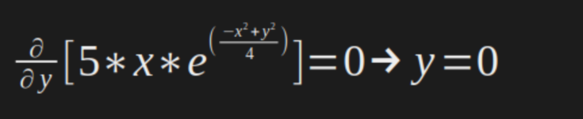
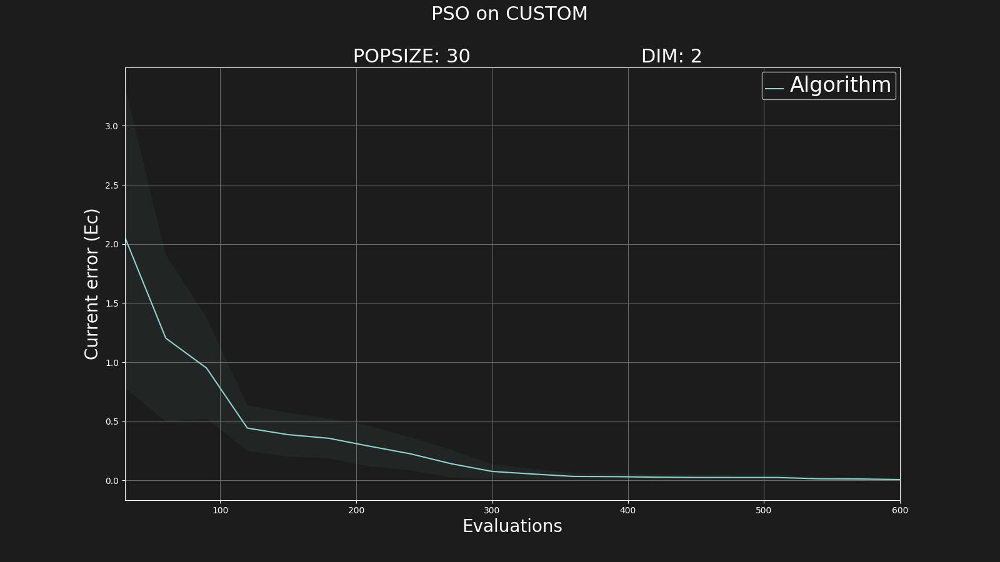
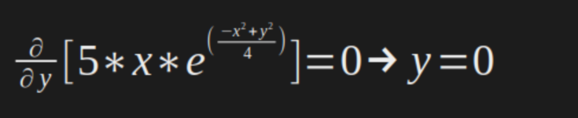
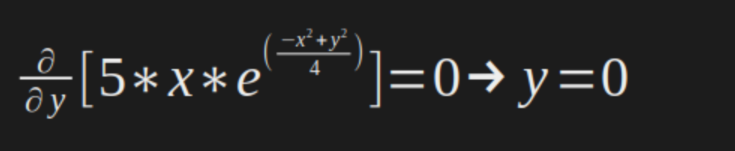

As a examples lets define a function that represents the following surface in a 3D space, and we want to minimize, that is, we want to find the coordinates
(x, y) that represents the minumum value of the function.
However, before of it, lets create a directory where we want to run our experiements. So we create the directory
example1 in the directory
AbEC/experiments/.
$ mkdir ../experiments/example1
And inside of this directory, we edit our configuration and function files.
Below is how the surface looks like:
Represented by the following equation:
With
A = 10 and
B = 2.
So, the
function.py file will be like:
>
[ file ]
$ nano ../experiments/example1/function.py
import numpy as np
def function(x):
return 5*x[0]*np.exp(- ( ((x[0])**2) + ((x[1])**2) )/4)
And now we need to set the configuration files. For the example lets use a classical PSO algorithm, without any components.
> algoConfig.ini
Starting with the
algoConfig.ini, we are just going to set the optimizer to perform PSO and the rest just leave the default configuration.
So, out file is something like this:
>
[ file ]
$ nano ../experiments/example1/algoConfig.ini
{
"ALGORITHM": "PSO",
"POPSIZE": 30,
"MIN_POS": -10,
"MAX_POS": 10,
"PSO_POP_PERC": 1,
"PSO_PHI1": 2.05,
"PSO_PHI2": 2.05,
"PSO_W": 0.729,
"PSO_MIN_VEL": -10,
"PSO_MAX_VEL": 10
}
> frameConfig.ini
In the
frameConfig.ini we are just going to edit the number of evaluations in the parameter
"FINISH_RUN_MODE_VALUE".
The file is something like this:
>
[ file ]
$ nano ../experiments/example1/frameConfig.ini
{
"RUNS": 10,
"FINISH_RUN_MODE": 0,
"FINISH_RUN_MODE_VALUE": 600,
"SEED": 42
}
> problemConfig.ini
Starting with the
algoConfig.ini, we are just going to set the optimizer to perform PSO and the rest just leave the default configuration.
So, out file is something like this:
>
[ file ]
$ nano ../experiments/example1/problemConfig.ini
{
"BENCHMARK": "CUSTOM",
"NDIM": 2,
"FUNCTION": "function.py"
}
Once everything is configured, lets run!
$ ./app.sh -i 0 -p ../experiments/example1
The output will be something like this:
Where we can see that our solution is something around
x≃-1.41 and
y≃-0.01.
And to see the files generated by running the algorithm:
$ ls ../experiments/example1
algoConfig.ini frameConfig.ini problemConfig.ini results
We may want to take a look in the images generated:
$ open ../experiments/example1/results/ecMean.png
Congratulations!! you now have runned the algorithm on the problem that you defined.
>> ALTERNATIVE <<
For this example, as is a differentiable function, we could find the minimum points algebraically using the derivatives. For this, we just need to set the first derivative of the function equal to zero.
As is a multivariate function, we need to perform the partial derivative for each variable, and then set to zero to find the values, just like this:
In our case:

And then, now we know the the optimal points are:
And then the
functionAlt.py it would be something like:
>
[ file ]
$ nano ../experiments/example1/functionAlt.py
import numpy as np
optimal = [-np.sqrt(2), 0]
def equation(s):
return return 5*s[0]*np.exp(- ( ((s[0])**2) + ((s[1])**2) )/4)
def function(x):
opt = equation(optimal)
fit = equation(x)
error = abs(opt - fit)
return error
As we changed the the fitness function file, we need to change in the problemConfig.ini:
>
[ file ]
$ nano ../experiments/example1/problemConfig.ini
{
"BENCHMARK": "CUSTOM",
"NDIM": 2,
"FUNCTION": "functionAlt.py"
}
Running again:
$ ./app.sh -i 0 -p ../experiments/example1
The output will be something like this:
And the graphic:

That's all folks ... for today :)
---------------------------------------------------------------------------------------------


 
